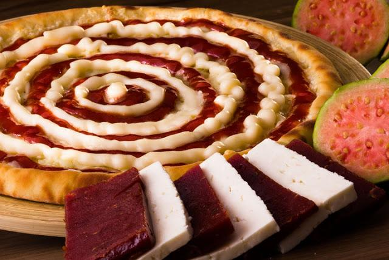

Olá, sejam bem vindos. >Olá, sejam bem vindos.Nosso estabelecimento fornece varios tipos de pizza como pizza doce pizza salgada pizza vegana.

Olá, sejam bem vindos. >Olá, sejam bem vindos.Nosso estabelecimento fornece varios tipos de pizza como pizza doce pizza salgada pizza vegana.


01. Pizza Cereja - Nossa pizza de cereja, contém os seguintes ingredientes na receita: cereja,chocolate amargo,com granulado de brigadeiro.
02. Pizza napolitana - Nossa pizza napolitana ,contém os seguintes ingredientes na receita: quiejo mussarela,queijo gruyere,calabresa,tomate,borda recheada (de queijo parmezão)
03. Pizza Chiocco Mezo - Nossa pizza mesclada,contém os seguintes ingredientes na receita: chocalate amargo,chocolate branco,borda recheada(chocolate belga)


04. Nossa pizza peperone ,contém os seguintes ingredientes na receita. peperone,queijo gruyere,borda recheada de (queijo parmezão).
05. Pizza Marguerita - Nossa pizza marguarita ,contém os seguintes ingredientes na receita: quiejo mussarela,queijo gruyere,folha agrião,molho de tomate,com calabresa.
06. Pizza creamcheese - Nossa pizza peperone ,contém os seguintes ingredientes na receita: peperone,queijo gruyere,borda recheada de (queijo parmezão).



07. Pizza morango - Nossa pizza de morango,contém os seguintes ingredientes na receita: morango,chocolate,com borda recheada (chocolate branco),com granulados de brigadeiro.
08. Pizza de 4 queijos - Nossa pizza 4 queijos ,contém os seguintes ingredientes na receita: quiejo mussarela,queijo parmezão,queijo gruyere,queijo estepe.
09. Pizza romeu e Julieta - Nossa pizza Romeu e Julieta contém os seguintes ingredientes na receita: quiejo,goiaba,chocolate,com borda recheada